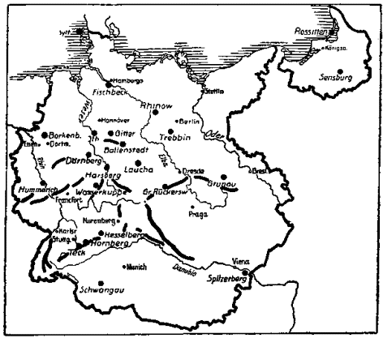

Manual del Vuelo a Vela
Wolf Hirth
1942
4000 m. de altura en el Concurso del Rhön de 1937
por
WERNER BLECH
En el concurso
del Rhön de 1937
volaba yo en un nuevo velero. Había escogido este modelo, no dejándole para el último
lugar, a pesar de su gran peso (125 Kg.), por serme conocidas sus buenas propiedades de
vuelo. Lo acertado de mi elección lo vi comprobado en el segundo día del concurso,
durante un vuelo de altura, en el cual el aparato recibió un depósito de hielo tan
grande como yo no había visto nunca en mis numerosos vuelos de altura. Muy cerca de la Wasserkuppe estaba yo ya
a los 1200 m. sobre el mar, volando sin visibilidad en una nube, y luego a los 2400 m.
salí de la nube hacia el Este para ver si alcanzaba un sitio que suponía aún que había
de tener mayor ascendencia y que había visto antes en la capa de nubes que, por cierto,
era casi cerrada del todo. Lo conseguí y empezando por tener 3 a 4 m/seg. de velocidad
ascendente en el límite inferior de la nube, volé describiendo círculos regulares en
una hermosa y tranquila ascendencia que luego llegó a los 6 m/seg. El aire estaba tan
tranquilo que podía abandonar el aparato a sí mismo cuatro o cinco minutos y seguía
virando y virando, sólo con la inclinación transversal que inicialmente le di. A los
2500 m. quedó fuera de servicio el indicador de velocidad a consecuencia de la
condensación del agua en la tobera y en la tubería. Todo el aparato estaba chorreando
como si lloviese mucho, por lo que vi claro que era un día en que, si conseguía llegar a
mucha altura, tenía que contar con un espeso depósito de hielo. A los 3000 m. empezaron
a cubrirse las alas de un velo cristalino; la cabina se puso blanca de hielo y opaca.
Pronto no me fue posible ni abrir las ventanillas porque se habían helado. Pero todavía
el indicador de virada seguía indicando normalmente. Entonces puse a funcionar el
indicador eléctrico, el cual, naturalmente, no quería funcionar. Como el aire era muy
turbulento no podía mantener el aparato en la ascendencia hasta que no hice funcionar el
indicador eléctrico. El altímetro señalaba algo más de los 4000 m. cuando entré en
la descendencia. Tuve que volar diez minutos en línea recta con la brújula para llegar a
salir de la nube, en la que había estado hora y media seguida. Al descender, el aparato
iba poco a poco deshelándose y de los bordes de las ventanillas caían carámbanos
gordos como un dedo; el borde de ataque de las alas tenía una tira de hielo de 5 cm. de
grueso y las mismas alas estaban cubiertas por varias capas de hielo. Este colosal
depósito que calculé podría ser de 1/4 a 1/2 quintal, insistía sobre el aparato sin
la menor señal de perturbación ni de pesadez en los mandos; únicamente la velocidad
de descenso era un poco mayor. Seguramente que otro velero habría tenido que pasar por la
caída en vuelo desbocado a consecuencia del aumento de peso en la proa y la pesadez de
mandos producidos por el hielo, hasta que se hubiese fundido. Con mi « Mini » atravesé
todavía aquel día la capa de nubes cerrada que estaba a los 2000 m. de altura y
aterricé, después de un largo planeo, en el bosque de Turingia, a algo
más de los 100 Km. de distancia de la Wasserkuppe. 
Fig.
141. Carta de las escuelas alemanas de vuelo sin motor